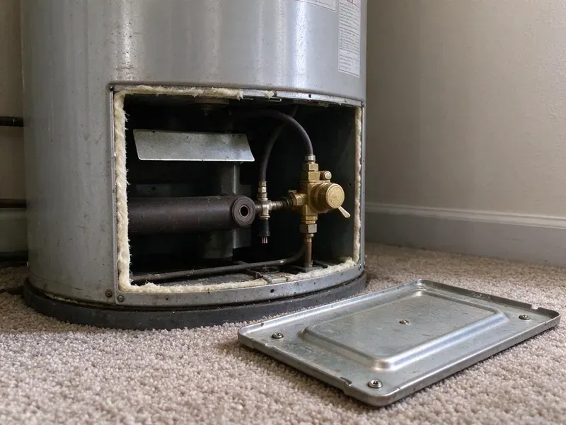

Drain Repairs in Janesville, WI
Facing a stubborn clog or a leaky drain in Janesville, WI? HKV Plumbing provides quick and effective drain repairs to get your system flowing freely again.
- Fast Drain Service
- Warrantied Work
- Upfront Flat-Rate Pricing
- Licensed & Insured
Professional Drain Repairs Are Just a Call Away in Janesville, WI.
Our skilled plumbers are ready to tackle any drain issue, big or small.
Professional Drain Repairs in Janesville, WI for Every Fixture
HKV Plumbing treats a drain that clogs every month as a repair problem, not a cleaning problem. Hard water scale, grease buildup, poor slope and broken fittings all cause repeat clogs, and we find which one you have. Then we fix it with the right parts and test the line before we leave.
Our expertise includes:
- Tree root removal and pipe section replacement
- Hydro-jetting for stubborn clogs and buildup
- Install new drain lines to code standards.

Additional Plumbing Repair Services in Janesville, WI
We offer expert plumbing repair services across Janesville, WI to stop leaks, clear blockages, and keep every fixture working the way it should.


Customers
Why Choose HKV Plumbing for Drain Repairs in Janesville, WI?
We pride ourselves on delivering durable drain repair solutions that stand the test of time. Our focus is on restoring your drain system and heading off future problems.
- Cause Not Symptom, We find out why the drain fails instead of just pushing the clog deeper into the line.
- Stocked Trucks, Common drain parts in ABS, PVC and brass are on hand for same-visit repairs.
- Lasting Solutions, We focus on providing durable repairs that address the root cause of your drain issues, not just temporary fixes.
Citywide Coverage
Our commitment to Janesville residents means complete coverage for all your drain repair needs. From the historic districts to newer developments, our teams are familiar with the various plumbing systems and can quickly respond to your service requests.
Experienced Team
Our team of plumbers brings years of hands-on experience in drain repair, dealing with everything from minor clogs to major sewer line breaks. They are trained on the latest techniques and equipment to deliver accurate and effective repairs.
Safety-First Approach
Safety is paramount in all our drain repair work. We stick closely to all local Janesville and Wisconsin plumbing codes and safety regulations, so every job is completed without risk to your property or family. Our team uses proper safety gear and protocols.
Trusted Certified Janesville Plumbing Services Professionals
At HKV Plumbing, we take pride in providing certified plumbing services throughout Janesville, WI. Backed by leading industry credentials, our experienced plumbers combine technical skill with genuine customer care. Whether it is repair, installation, or maintenance, we follow strict safety and quality standards to deliver long-lasting results you can trust.
Call Us Now PHCC Plumbing Contractor Recognition
PHCC Plumbing Contractor Recognition Better Business Bureau (BBB) Accreditation
Better Business Bureau (BBB) Accreditation Angi Certified Pro
Angi Certified Pro ISO 9001 Quality Management Certification
ISO 9001 Quality Management CertificationReliable Drain Repair Services in Janesville, WI
Drain Repair Cost Comparison in Janesville, WI
A trap or slip-joint repair is one of the least expensive plumbing jobs and is often done in under an hour. Replacing a section of branch drain in an open wall or crawlspace costs more but is still a modest repair. Opening finished walls or replacing a full stack is the most involved option. We explain each choice and its price so you can decide with confidence.

Cast Iron Drain Stack Repair in Janesville, WI
Many older homes have cast iron drain stacks and branch lines that are now corroding from the inside. Rust scale catches debris and cracks let water seep into walls and floors. We cut out failing sections and replace them with ABS or PVC using shielded transition couplings. When the whole stack is failing, we quote a full replacement so you can plan the work.
Broken Drain Pipe Repair in Janesville, WI
Broken drain pipes, often caused by shifting soil, tree root intrusion or age, require prompt attention. In Janesville, WI, our team can diagnose the exact location and extent of the damage using camera inspections. We then perform targeted repairs, which might involve replacing a section of pipe with durable PVC or cast iron, for a lasting fix.
Bathroom Drain Repair in Janesville
Bathroom drains, including sinks, showers and tubs, often get clogged with hair, soap residue and hygiene products. Our team in Janesville provides efficient repair services for these common problems, clearing blockages and fixing leaks. We also handle more complex issues like faulty pop-up stoppers or worn-out P-traps.
Drain Vent Repair in Janesville, WI
A properly functioning drain vent system is essential for smooth drainage and preventing sewer gas odors. If you notice gurgling sounds or slow drains in Janesville, WI, it could point to a blocked or damaged vent pipe. We diagnose and repair vent issues, restoring proper airflow so your plumbing system operates as it should.
Preventive Drain Maintenance in Janesville
Beyond repairs, we offer preventive drain maintenance services designed to keep your plumbing system running smoothly and avoid future issues. This includes scheduled drain cleaning, video inspections to identify potential problems early and advice on proper drain use. Regular maintenance can greatly extend the life of your drains and pipes, helping homeowners in Janesville save money on costly emergency repairs down the line, especially where water is hard.
Leaking Drain Pipe Repair in Janesville, WI
Leaking drain pipes can cause serious water damage and mold growth if not addressed promptly. Causes often include corrosion, shifting foundations or damage from root intrusion. HKV Plumbing performs precise leak detection using acoustic and thermal imaging equipment. We repair leaks by patching small holes or replacing damaged sections of PVC, cast iron or copper piping, ensuring a watertight seal. Our repairs meet all local plumbing codes.

Sewer Drain Line Repair in Janesville
The main sewer drain line carries all wastewater from your home. Issues like blockages, cracks or collapses in this line can lead to whole-house plumbing problems. Our plumbers in Janesville are experts in sewer drain line repair, using trenchless methods where possible to limit disruption to your property, or traditional excavation when necessary for severe damage.
Drain Repairs Near Me in Janesville, WI
When you search for 'drain repairs near me' in Janesville, WI, you want a reliable local plumber who can respond quickly. HKV Plumbing is your neighborhood expert, ready to provide fast and professional service for all your drain issues. We pride ourselves on our quick response times and thorough work.
We pride ourselves on being the go-to local choice for drain repairs, offering efficient service without long wait times. Our close proximity means we can send a skilled plumber to your location in Janesville faster, reducing the inconvenience and potential damage caused by drain issues. Contact us for local expertise you can count on.
HKV Plumbing at a Glance
- Fully licensed plumbing team covering Janesville, WI
- Same-day appointments and 24/7 emergency response
- Clear written estimates, no hidden fees
- 4.8-star rated by 448+ Wisconsin customers
Janesville Map
Janesville Information
- Population
- 66,102
- Area codes
- 608/920/815
- Service area
- Janesville and communities within 40 miles
- Nearby
- Madison, Waukesha, West Allis, Wauwatosa
Effective drain repairs matter for homes in Janesville, WI, where shifting soil can stress underground piping and mineral buildup can narrow drains over time. Hard water is common across much of Wisconsin, especially where supply comes from groundwater moving through limestone and dolomite.
Expert Services
Trust our professionals for reliable HKV Plumbing solutions in Janesville, WI.
Our Specialized Plumbing Services in Janesville, WI
At HKV Plumbing, we provide a complete range of plumbing services across Janesville, WI. From leak detection to full system installations, our team ensures fast, precise, and affordable service for both residential and commercial properties. Explore our core services below:


How Our Drain Repair Process Works in Janesville, WI
We follow a step-by-step approach to diagnose, repair and verify all drain issues, delivering reliable results every time in Janesville, WI.
Request a Quote
Call (414) 432-4641 or fill out our online form to schedule your drain repair service. We'll gather initial details about your issue and set up a convenient appointment time.
Diagnosis & Plan
Our expert technician will arrive at your property to perform a detailed inspection, often using video cameras to accurately locate the problem. We'll then explain the issue and propose the most effective repair plan.
Expert Repair
Once you approve the plan, our team will proceed with the repair using appropriate tools and techniques, from hydro-jetting to pipe replacement. We work efficiently and meticulously to restore your drains.
Frequently Asked Questions About Drain Repairs in Janesville
Simple trap or slip-joint repairs typically cost $150 to $350. Replacing a section of drain pipe usually runs $400 to $1,200, and cast iron stack replacement can range from $2,000 to $6,000 depending on access. We provide a written price before starting.
We work with all common types of drain pipe found in Wisconsin homes, including PVC, ABS, cast iron and copper. Our technicians are skilled in repairing and replacing sections of various pipe materials for compatibility and longevity with your existing plumbing system.
It can. Hard water is common across much of Wisconsin, especially where supply comes from groundwater moving through limestone and dolomite. Where water is hard, calcium scale builds up inside drain pipes, especially near showers and laundry lines. Over time it narrows the pipe and traps debris, which is why periodic cleaning and timely repairs matter.
Minor fixture drain repairs typically do not require a permit. Replacing drain stacks, relocating drains or adding new lines often does, depending on the city. We handle permits when they apply.
Harsh chemical cleaners can soften older ABS glue joints and corrode metal drain parts with repeated use. They also seldom clear grease or scale fully. A mechanical auger or hydro-jet is safer and more effective.
We work with all standard drain pipe materials found in Wisconsin homes, including PVC, ABS, cast iron and copper. Our repairs and replacements use high-quality, code-compliant materials from trusted manufacturers for durability and longevity.
Drain lines can break or collapse due to several factors, including shifting soil, tree root intrusion, corrosion from age, extreme temperature changes or heavy loads passing over underground pipes. Poor installation or defective materials can also contribute to early failure.
You should call a professional if your DIY efforts with a plunger or basic snake haven't cleared the clog, or if you have recurring clogs, foul odors or multiple slow drains. These issues often point to a deeper problem that requires specialized tools and expertise to resolve effectively.
What People Are Saying About Our Plumbing Experts?

Emily R.
I called HKV Plumbing for plumbing repair, and the technician was fast, polite, and thorough. They explained the problem clearly and fixed it the same day. I will definitely hire them again. Highly recommended!
Plumbing Repair · Waukesha, WI
Patricia H.
We had a slab leak that two other companies could not find. HKV Plumbing located it in under an hour, explained our options, and the price matched the quote to the dollar.
Slab Leak Repair · West Allis, WI
Daniel K.
A pipe burst at 11 pm and they actually answered. The plumber showed up within the hour, shut everything down, and had us back to normal the next morning. Could not ask for more.
Emergency Plumbing · Janesville, WI
Robert G.
The trenchless sewer replacement saved our front yard. They walked us through the camera inspection footage first so we knew exactly what we were paying for.
Sewer Line Replacement · Madison, WI
Sofia M.
Two new toilets installed in one visit, no mess left behind, and the tech even adjusted a faucet he noticed was dripping. Fair pricing and really friendly.
Toilet Installation · Milwaukee, WI
Mark T.
When our office needed drain cleaning, HKV Plumbing provided quick, reliable service. The plumber arrived on time and made sure every drain flowed perfectly before leaving. Very satisfied.
Drain Cleaning · Waukesha, WI